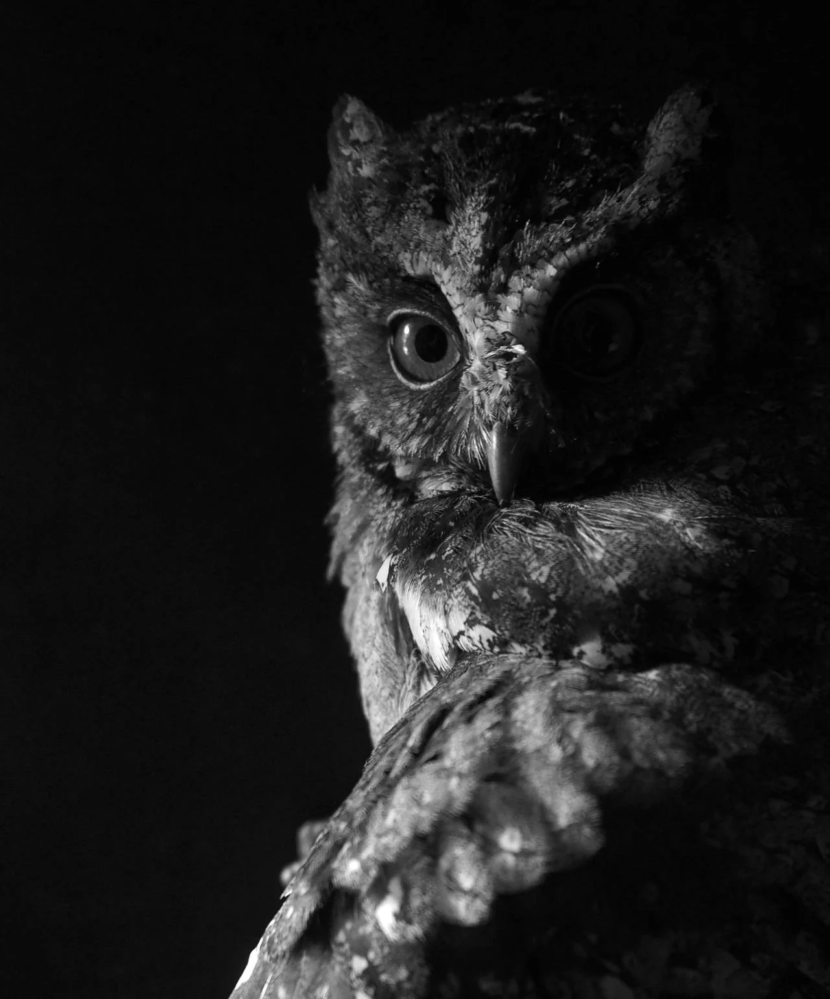

세 번의 심장 박동 - 수풀 속의 움직임을 포착하고 죽음의 급강하를 시작하기까지 걸린 시간은 그게 전부였다. 쥐는 다가오는 죽음을 전혀 보지 못했다. 날개의 그림자가 단순한 그늘 이상의 의미를 지니는 어두운 시간에는 그런 것이 자연의 섭리였다.
[Three heartbeats - that’s all it took between spotting movement in the undergrowth and launching into the kill dive. The mouse never saw death coming. Such was the way of things in the dark hours, when wing-shadow meant more than mere shade.]
얼룩진 깃털 층 아래의 근육은 팽팽하게 감겨있었고, 모든 동작은 수많은 생존의 밤을 통해 정확하고 숙련되어 있었다. 아래로 펼쳐진 숲은 잔치처럼 보였고, 작은 발들의 바스락거림과 나무껍질을 긁는 발톱 소리로 가득했다. 모든 소리는 단순한 시각이 제공할 수 있는 것보다 더 생생한 그림을 그려냈다.
[Muscles coiled tight beneath layers of mottled feathers, each movement precise and practiced through countless nights of survival. The forest below spread out like a feast, teeming with the rustle of tiny feet and the scratch of claws on bark. Every sound painted a picture more vivid than mere sight could provide.]
하지만 오늘 밤은 달랐다. 사냥터를 통과하는 다른 무언가가 있었다 - 고요한 날개로 비행하는 대신 네 발로 걷는 또 다른 포식자였다. 코요테의 존재는 먹잇감들을 더 깊은 굴속으로 도망가게 만들었고, 밤 사냥의 자연스러운 질서를 방해했다.
[But tonight was different. Something else moved through the hunting grounds - another predator, one that walked on four legs instead of soaring on silent wings. The coyote’s presence sent prey scurrying deeper into their burrows, disrupting the natural order of the night hunt.]
머리를 180도 완전히 돌려, 노란 눈으로 침입자의 움직임을 쫓았다. 코요테는 어리고 미숙했으며, 성공적인 사냥을 하기에는 너무 시끄럽고 서툰 움직임을 보였다. 올빼미의 영역에서, 그런 소음은 용납될 수 없었다.
[Head rotating a full one-hundred-and-eighty degrees, yellow eyes tracked the intruder’s progress. The coyote was young, inexperienced, its movements too loud and clumsy for successful hunting. In the owl’s territory, such noise was unforgivable.]
들쥐 한 마리가 드러난 뿌리 사이를 달려 지나가자 두 포식자의 주의를 끌었다. 코요테가 달려들었지만, 땅에 묶인 다리는 비단을 베는 흑요석 날처럼 공기를 가르는 날개를 당해낼 수 없었다. 아래로, 아래로, 치명적인 발톱을 뻗었다 - 이번에는 들쥐가 아닌, 공중 패권에 도전하는 건방진 사냥꾼을 향해.
[A vole darted between exposed roots, drawing both predators’ attention. The coyote lunged, but earth-bound legs were no match for wings that could slice through air like obsidian blades through silk. Down, down, deadly talons extended - not for the vole this time, but for the upstart hunter who dared to challenge aerial supremacy.]
충돌로 인해 털이 날아갔다. 날카로운 발톱이 민감한 귀 끝을 할퀴었고, 밤공기는 놀람과 고통의 비명으로 가득 찼다. 한 번의 공격이면 충분했다. 코요테는 퇴각했고, 떨어진 나뭇잎 위에 어두운 별처럼 반짝이는 작은 핏방울들을 남겼다.
[The impact sent fur flying. Sharp claws raked across sensitive ear tips, and the night air filled with yelps of surprise and pain. One strike was all it took. The coyote retreated, leaving behind small droplets of blood that gleamed like dark stars against fallen leaves.]
승리는 만족감을 주지 않았고, 단지 생존이라는 필수적인 일상으로의 복귀일 뿐이었다. 올빼미의 머리는 새로운 소리를 향해 돌아갔다 - 솔잎 위를 달리는 작은 발자국 소리였다. 밤은 아직 젊었고, 배고픔은 어떤 생명체도 기다려주지 않았다, 그들이 위에서든 아래에서든 어둠을 지배하건 말건.
[Victory brought no satisfaction, only a return to the essential business of survival. The owl’s head swiveled toward a new sound - the soft patter of tiny feet against pine needles. The night was still young, and hunger waited for no creature, whether they ruled the darkness from above or below.]
날갯짓이 사냥을 재개하며 바람에 비밀을 속삭였다. 황혼과 새벽 사이의 이 영역에서는 의심이나 망설임이 있을 자리가 없었다. 오직 본능의 확신만이 있을 뿐이었다. 그것은 대대로 밤의 사냥꾼들에게 전해 내려왔고, 그들 모두는 생존이 곧 그림자 사이의 공간을 지배하는 것임을 알고 태어났다.
[Wingbeats whispered secrets to the wind as the hunt resumed. In this realm between dusk and dawn, there was no room for doubt or hesitation. Only the certainty of instinct, passed down through generations of night hunters, each one born knowing that survival meant mastery of the spaces between shadows.]
다음 급강하는 피와 양분을 가져올 것이다. 늘 그래왔듯이. 고요한 날개로 밤을 지배할 때는 그것이 자연의 섭리였다.
[The next dive would bring blood and sustenance. It always did. Such was the way of things when you ruled the night on silent wings.]